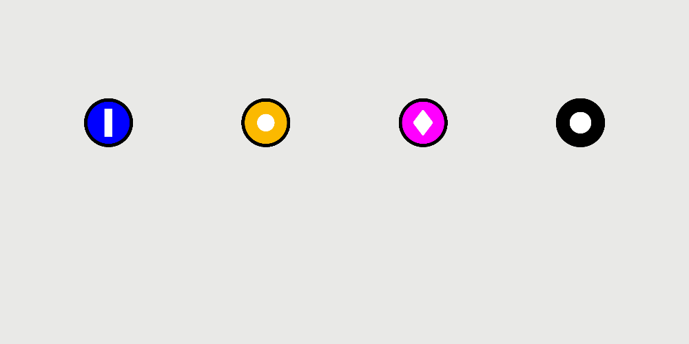
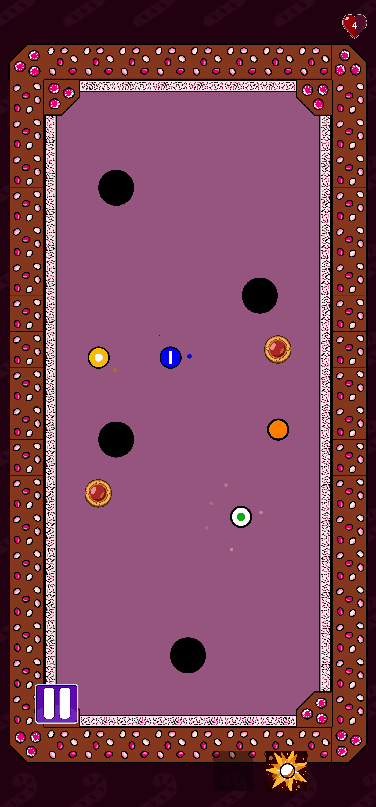
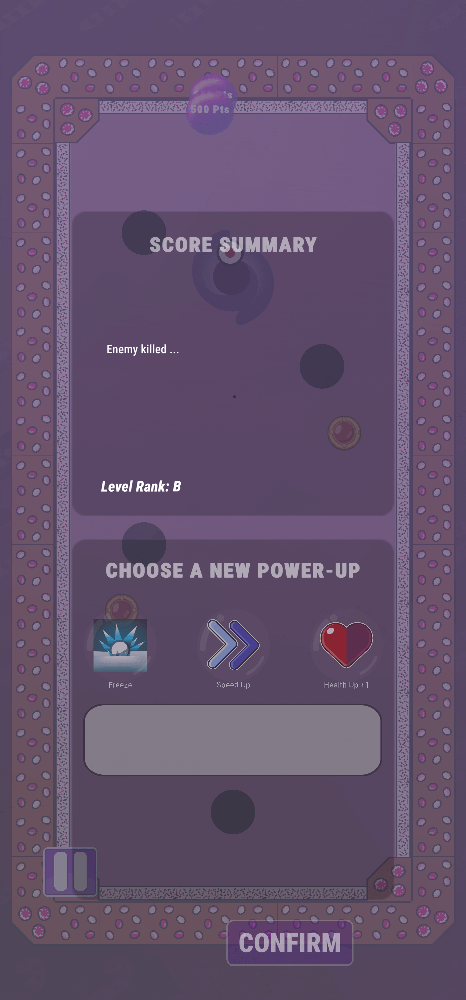
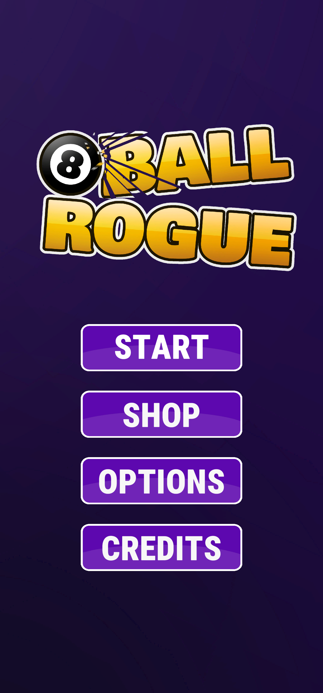
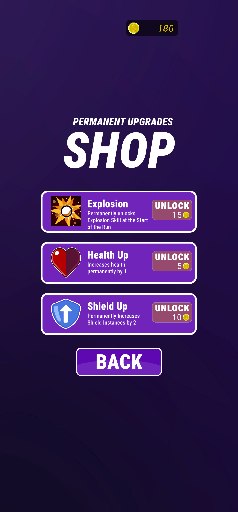
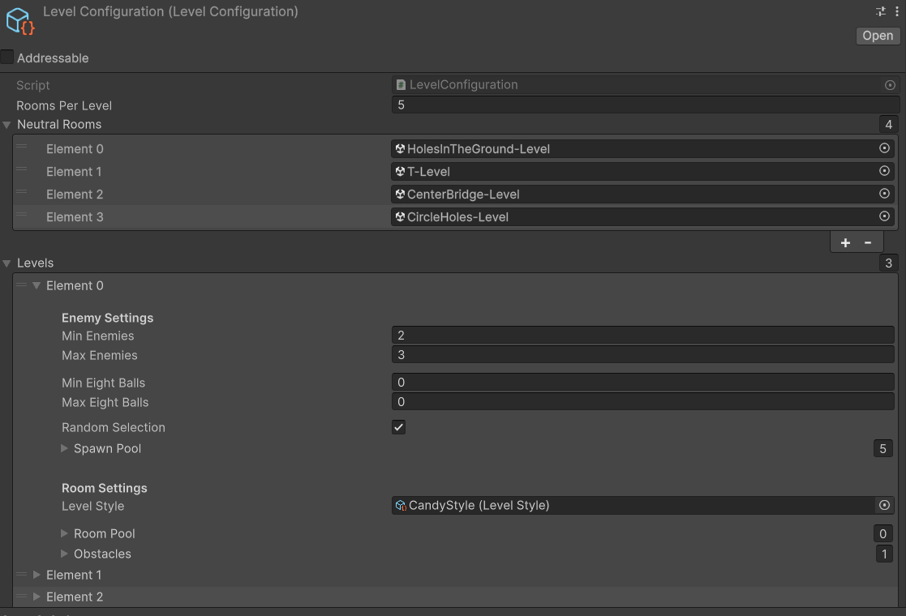

Overview
In 8-Ball Rogue you play as a white billiard ball, moving from room to room filled with dangerous billiard balls that try to defeat you. Sinking all enemies in a room opens a portal where you can select one of three random upgrades and enter the next room. After every five rooms you reach a new level with different rooms, a different visual style, different obstacles, and stronger enemies. A full run spans four visually distinct levels and 20 rooms. Between rooms you earn coins that can be spent in the main menu on permanent upgrades or new abilities that appear during future runs.
Upgrades come in two flavours: active abilities and passive upgrades. Active abilities are triggered via on-screen buttons during gameplay. Explosion, for example, creates a large blast that pushes all nearby enemies away—great for sinking enemies at range. Freeze instantly stops the player's momentum, letting them line up another shot immediately, which opens up creative trick-shot plays. Passive upgrades include things like increased maximum speed—more speed means more impact force, which means more fun—or a Shield that blocks one enemy collision or projectile while standing still, giving the player a safety net against a single mistake.
Enemies are billiard balls with distinct behaviours, each using an ability on cooldown. Particle effects signal how close an enemy is to activating. The Dash enemy is a heavier ball that charges at the player periodically. The Projectile enemy fires a fast, powerful shot on cooldown. The Magic Projectile enemy is lighter and launches a slow projectile that pushes the player toward the nearest hole on contact. The Black Hole enemy is the most dangerous—it spawns a temporary black hole that functions like a regular pocket, instantly removing a life if the player falls in.
My Role: Systems Architecture
While this was a team effort, I owned the foundational systems that made 8-Ball Rogue scalable and easy to balance. Specifically: tile systems, level/room generation and management, and the centralized enemy spawn and difficulty configuration.
Core Responsibility
Design and implement flexible systems for level layout, enemy spawning, and difficulty scaling—enabling designers to create and balance content without touching code.
Tile System Architecture
Rooms are built on a grid using custom rule tiles, where each tile type carries specific properties: walls, holes, and potential obstacle spawn points are all placed by designers directly in the Unity editor. However, the tile layer only defines the layout. When a room loads, obstacles are instantiated as prefabs on a random selection of marked spawn tiles, and hole tiles get replaced by collider-equipped prefabs that provide the gameplay functionality. This two-layer approach—tiles for layout, prefabs for behavior—was necessary because holes needed reliable world-space positions for collision detection, which proved difficult to achieve with tiles alone. The same rule tiles are reused across all four levels, with sprites swapping based on the configured visual style, so new levels could be themed without rebuilding layouts.
Level & Room System
Room shapes—walls, holes, obstacle spots, and numbered enemy positions—are hand-crafted by designers in the Unity editor, but what fills those rooms is controlled by one central ScriptableObject configuration. This single config defines the number of levels, how many rooms each level contains, spawn count ranges for enemies and obstacles, and the pools from which rooms, enemies, and obstacles are drawn per level. When a room loads, it pulls a random layout from the current level's pool and populates it within the configured bounds. For designers, adding a new room meant building the layout and dropping it into the relevant pool—the system handled randomization and theming from there.
Enemy Spawn & Difficulty System
Each level defines its own enemy pool and spawn count range. When a room loads, the system reads the numbered enemy positions from the hand-crafted layout and fills a random subset with enemies drawn from the current level's pool. Difficulty scales through the level structure itself: later levels introduce stronger enemy types and increase spawn counts. Because everything lives in the central config, balancing was a matter of adjusting numbers—designers could experiment with enemy compositions and immediately see results in-game.
Visual Effects & UI
Beyond core systems, I was also responsible for the player and enemy visual effects. Each enemy's cooldown ability is telegraphed through particle systems that ramp up as the ability nears activation, giving the player a readable visual cue to react to. I also contributed to parts of the mobile UI—a new challenge for the team, since elements had to account for varying screen sizes. The main difficulty was designing touch-friendly ability buttons that wouldn't trigger accidentally during the drag-to-shoot input.

Gallery
Screenshots and gameplay footage from 8-Ball Rogue, showcasing level design, enemy variety, upgrade systems, and mobile UI.




Technical Architecture
Tech Stack
Platform
Android (Mobile)
Engine
Unity
Language
C#
Team Size
5 (multi-disciplinary)
Systems Design Philosophy
The guiding principle was centralization and configurability. Rather than spreading game rules across dozens of scripts, one ScriptableObject config controls the entire run structure: levels, rooms, enemies, obstacles, and visual styles. This made it possible for any team member to tweak game balance, add content, or adjust the progression without writing code. The architecture prioritized fast iteration on mobile, where build times and testing cycles are already slower than desktop development.

Lessons & Future Iterations
The biggest lesson was about team communication. With five people at varying experience levels, art and sound assets went through numerous reworks, and project goals needed multiple reevaluations throughout development. On the technical side, the tile-based room foundation introduced friction—particularly around world-position accuracy for gameplay objects—that a prefab-first approach might have avoided. The centralized ScriptableObject config, however, proved its value: it became the team's shared language for discussing balance and content, and it made late-stage adjustments far less painful than they would have been otherwise.
Scalable Systems in Action
8-Ball Rogue proved that well-architected systems enable fast iteration, reliable balancing, and designer empowerment. The tile, room, and difficulty systems I built became the foundation for confidently adding new content throughout development. That's the kind of systems thinking I bring to every project.